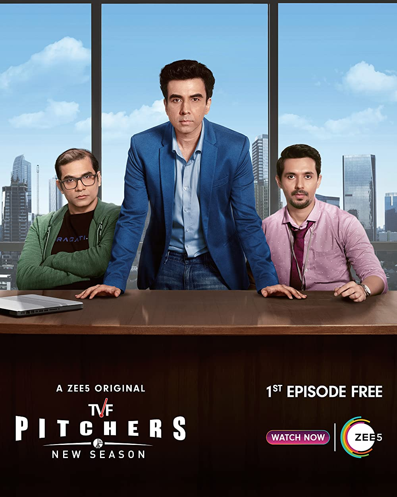
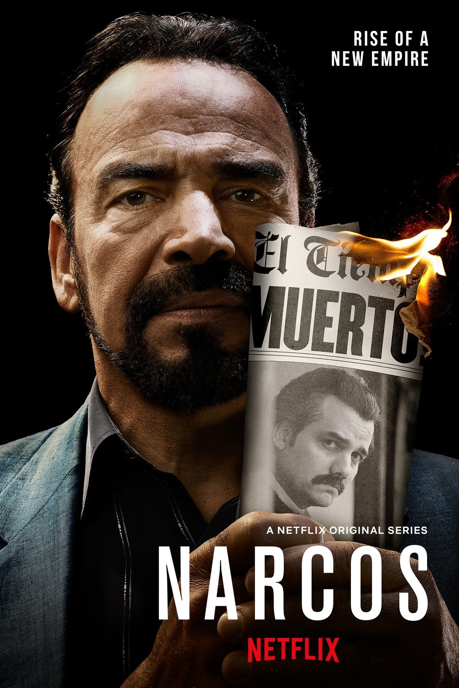
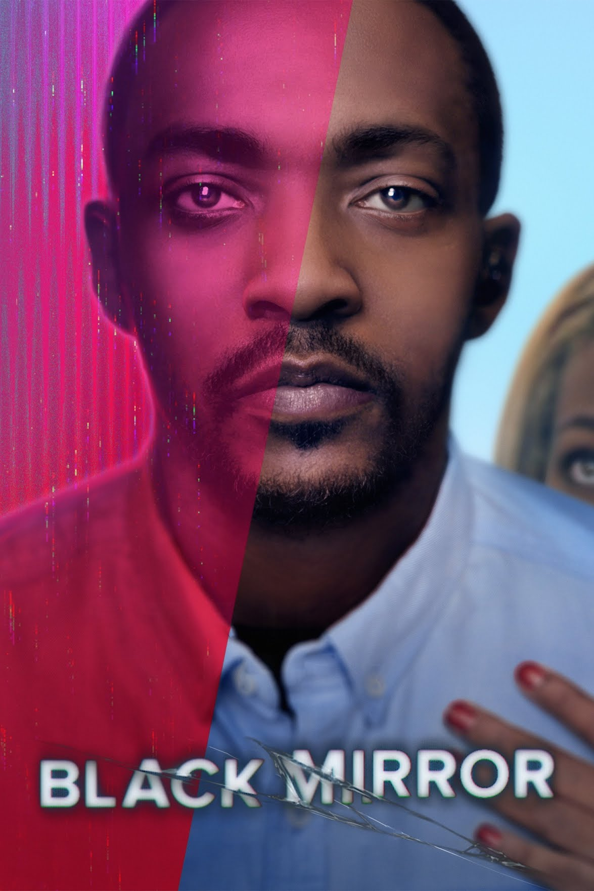

Game of Thrones is an American fantasy drama
television series created by David Benioff and D. B. Weiss for HBO. It is an adaptation of
A Song of Ice and Fire, a series of fantasy novels by George R. R. Martin, the first of which is
A Game of Thrones.
Number of Episodes: 10
Director:David Benioff and D. B. Weiss

TVF Pitchers
TVF Pitchers is an Indian Hindi-language web series created by The Viral Fever
and developed by Arunabh Kumar. It features Naveen Kasturia, Arunabh Kumar, Jitendra Kumar and Abhay
Mahajan along with Maanvi Gagroo and Riddhi Dogra
Number of Episodes: 15
Director: Akshay

Narcos
Netflix chronicles the rise of the cocaine trade in Colombia and the gripping real-life stories
of drug kingpins of the late '80s in this raw, gritty original series. Also detailed are the actions taken
by law enforcement as they battle in the war on drugs, targeting notorious and powerful figures that
include drug lord Pablo Escobar. As efforts are made to control cocaine, one of the world's most valuable
commodities, the many entities involved -- legal, political, police, military and civilian -- find themselves in conflic
Number of Episodes: 10
Director: Sameer

Black Mirror
Black Mirror is a series of stand-alone dramas -- sharp, suspenseful, satirical tales that explore techno-paranoia --
"Black Mirror" is a contemporary reworking of "The Twilight Zone" with stories that tap into the collective unease about the modern world, particularly regarding both intended and unintended consequences of new technologies and the effect they have on society and individuals. Each story features its own cast of unique characters, including stars like Bryce Dallas Howard ("The Help"), Alice Eve, Gugu Mbatha-Raw, Tom Cullen and Jerome Flynn ("Game of Thrones").
Joe Wright, Dan Trachtenberg, and James Watkins are among the featured directors